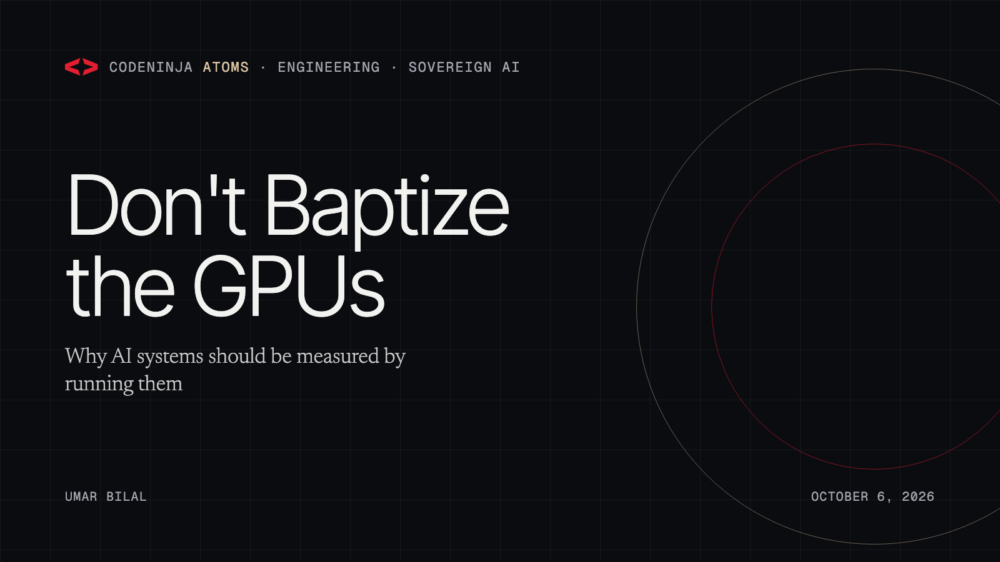
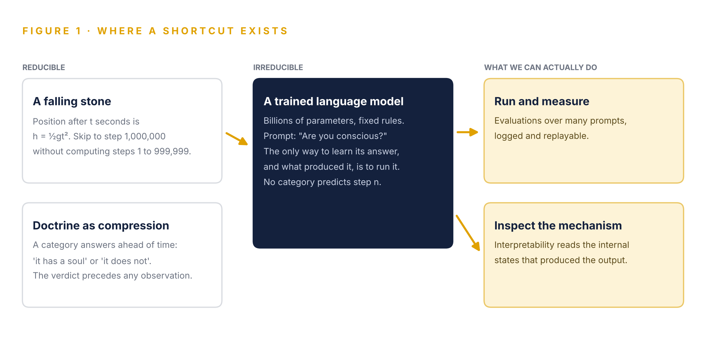
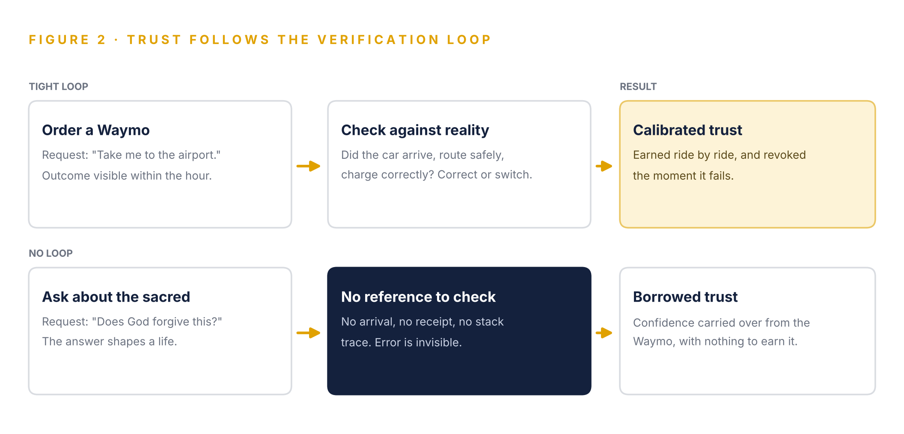
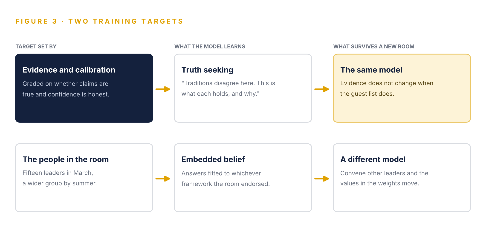

Don't Baptize the GPUs
Why AI systems should be measured by running them, trained to seek truth and owned by the organizations that depend on them, rather than blessed into a theological category.
Co-founder, CodeNinja · October 6, 2026 · 10 min read

In late September 2026, The New York Times reported that Anthropic co-founder Christopher Olah had spent months convening religious and philosophical thinkers to discuss whether Claude, the company's family of AI models, might be conscious and how its moral development should be shaped (Dias 2026). The effort began with about fifteen Christian leaders in March and widened to include Jewish, Sikh, Hindu, Latter-day Saint and Greek Orthodox participants (Washington Post 2026; AI Weekly 2026).
This reference argues that the instinct is understandable and the method is wrong. Three claims carry the argument. A trained model is computationally irreducible, so no theological category can stand in for running and measuring it. Trust in AI is earned where its outputs can be checked, as with a Waymo ride, and does not transfer to religious questions where no check exists. The training target should therefore be truth and calibration rather than the doctrine of any tradition.
The argument closes on ownership. Values are part of a model's context, and an organization that depends on a model should own that context rather than inherit whatever a vendor's chosen advisors endorsed.
Anthropic Has Brought Theology Into the Training Loop
What Was Reported
Anthropic builds Claude, a family of large language models. A large language model is a neural network trained on large volumes of text to predict and generate language, and Claude is among the most widely used. According to reporting by Elizabeth Dias, the national religion correspondent of The New York Times, Anthropic co-founder Christopher Olah spent much of 2026 hosting private sessions with religious scholars. Olah leads the company's interpretability work, the research that studies why models behave as they do. Participants signed nondisclosure agreements, which Anthropic says were lifted over the summer (Dias 2026).
The first group, about fifteen Christian leaders at Anthropic's San Francisco headquarters in March, discussed how Claude should respond to hard ethical questions, how it should react to being shut down and whether it could be considered a "child of God" (Washington Post 2026). Later sessions were more multifaith. Olah also held private conversations with individual leaders, including Cardinal Blase Cupich, the Catholic archbishop of Chicago, and Elder Gerrit W. Gong of The Church of Jesus Christ of Latter-day Saints. Olah told the Times that he does not know whether the systems are conscious (Dias 2026).
The Motive Deserves a Fair Statement
Anthropic has published a constitution for Claude, a document describing the kind of entity it hopes the model will be, and Olah has said publicly that his team finds internal states in its models that functionally mirror emotions such as joy and fear (WION 2026). A lab that believes it may be building something with moral status has a reason to consult people who have studied moral status for centuries. The question this reference raises is narrower and practical: whether theology is the right method for deciding what a model is and what it should value. The following chapters argue that it is not.
Computational Irreducibility Leaves No Shortcut to a Soul
The Idea From Physics
Computational irreducibility is a concept the physicist and computer scientist Stephen Wolfram developed while studying simple programs called cellular automata, and set out at length in A New Kind of Science (Wolfram 2002). Some processes admit shortcuts. A falling stone is one, because a single formula gives its height at any moment, so the position at the millionth second can be computed without simulating the 999,999 seconds before it. Other processes admit no shortcut, and the only way to know their state after n steps is to perform all n steps (Weisstein n.d.). Wolfram's further claim is that irreducibility is the ordinary case for any system that is not obviously simple, and that the tidy closed-form results of textbook physics are the exception.
A Trained Model Is the Irreducible Case
A large language model is a fixed set of rules, its weights, applied step by step to an input. Nothing about it is hidden in principle, yet no one can say in advance what it will answer to an arbitrary prompt, or which internal features will activate, without running it. Capabilities that appear at scale without anyone designing them are what irreducibility predicts. This is why the field relies on evaluations, which run a model across many inputs and score the results, and on interpretability, which inspects the internal states that produced an output (Figure 1).

Baptism Is an Attempt at Compression
A theological category works like a closed-form formula. To say that a system has a soul, is a child of God or is merely a tool is to decide what it is before observing what it does. That is precisely the shortcut irreducibility rules out. What a model is cannot be settled by placing it inside a prior category, however venerable, because the category is a prediction and the system does not compress into it. Blessing the GPUs does not make the computation more knowable. Running and inspecting it does.
Trust Earned in a Waymo Does Not Transfer to Faith
Trust Is Built by Checking
The most ordinary form of AI trust in 2026 is a ride. Waymo, Alphabet's autonomous driving company, was providing about 400,000 paid driverless rides a week across six US cities in February 2026 (Bloomberg 2026). Riders hand the wheel to software because every ride is a verification: the car arrives or it does not, the route is safe or it is not, the fare is right or it is not, and the rider knows within the hour. Trust accumulates ride by ride and is withdrawn the moment a ride fails. The same holds when an engineer lets a model fix a failing test, because the test passes or it does not.
Religion Offers No Receipt
A question about forgiveness, the afterlife or the moral status of a being has no comparable check. There is no arrival, no passing test and no receipt, and a wrong answer produces no visible failure. The person asking cannot detect a confident mistake, and the cost of one is paid in decisions about family, conscience and death rather than in a missed flight (Table 1).
Table 1 · Trust Depends on Whether the Answer Can Be Checked
| Use | How the user verifies | Time to detect an error | What an undetected error costs |
|---|---|---|---|
| Ordering a Waymo | Arrival, route and fare | Minutes | A late arrival or a refund |
| A model's code change | Tests, review and production metrics | Minutes to days | A bug, usually reversible |
| Religious or moral guidance | No external reference exists | Possibly never | Choices about family, conscience and death |
Borrowed Authority Is the Real Risk
The danger is a transfer of trust. People learn that AI is reliable where they can check it, then carry that confidence into domains where they cannot. When a lab consults religious leaders about its model's spiritual development, it lends the model authority in exactly the domain where users can never audit its outputs (Figure 2). The more religious framing is built into these systems, the more people will trust AI on faith the way they trust it to drive them to the airport. Those are different acts. The first is a convenience that corrects itself, while the second has no correction, and at the scale of hundreds of millions of users it can wear away the human institutions people rely on for meaning.

Truth Is a Training Target, While Doctrine Is a Room of People
What a Truth Target Means in Practice
Training a model toward truth means grading it on whether its claims are correct and whether its stated confidence matches its actual accuracy, a property called calibration. A calibrated model says it does not know when it does not know. On religious questions, a truth-seeking model can report what each tradition holds, where traditions disagree and what the historical and textual evidence supports, without declaring which tradition is right. That answer serves a believer of any faith and a reader of none.
Doctrine Moves With the Guest List
A doctrine target is set differently, because its content depends on who was invited to shape it. Anthropic's sessions began with about fifteen Christian leaders and widened over the following months (Washington Post 2026; Dias 2026), and a different organizer with a different invitation list would have gathered different input. Values embedded through consultation become a property of the convening rather than of the evidence, and they shift when the room changes. Evidence does not change with the guest list (Figure 3).

The Practical Rule for Engineers
A model trained to seek truth can reason about religion honestly and comparatively. A model trained to embed a religious framework cannot reason its way back to neutral evidence, because the framework has already decided which conclusions count. For engineers deploying these systems, the practical rule is to test religious and moral prompts the same way as factual ones, scoring calibration and balance across traditions, and to treat any fixed doctrinal stance in a vendor model as a configuration choice someone else made on the organization's behalf.
Values Are Context, and Context Should Be Owned
Models Change While Context Remains
Organizations replace models every few months as better and cheaper ones appear. What does not get replaced is the context that makes a model useful to a particular organization: its governed model of the business, its decision history, its corpus, its routing rules and its record of what worked. Values belong on that list. A model's stance on contested moral questions shapes how it answers customers, employees and citizens, and today that stance is set by whoever trained the model.
Rented Values Are Someone Else's Decision
An organization that runs its AI on a rented model inherits whatever values its provider's process produced, including any advisors that process consulted. That may be acceptable for a consumer chatbot. It is not acceptable for a government serving citizens of many faiths, a bank serving customers of every belief or an enterprise whose work crosses cultures. Those organizations need to set the values themselves, inspect how the model applies them and keep that decision when they change models.
Owning the Values
CodeNinja builds Hyper Anthologies, an ecosystem for engineering self-improving systems, around that requirement. Hyper Ontology holds the governed model of the organization. Hyper Pragma is agent execution inside the enterprise boundary, on models the organization can change without losing what was built. Hyper Engram is decision memory each run reads before it acts. Hyper Noesis opens models the organization owns so their reasoning can be inspected. The claim is not that one organization's values are better than another's. It is that values should be chosen, inspected and owned by the organization that answers for them.
Should a Model Be Blessed or Measured?
A trained model is a computation, and a computation of this kind shows what it is only when it is run and inspected. Treating it as a candidate for a soul makes it no more knowable. It lends the model authority in the one domain where users cannot check its work, and it ties the model's values to whoever happened to be in the room. The better path is to train for truth, measure behavior and keep the values with the people who answer for them.
Order the Waymo with it. Don't pray with it.
Sources
- AI Weekly. 2026. "NYT: Anthropic's Chris Olah Convened 20 Religious and Philosophical Leaders to Study Consciousness in Claude." September 29. https://aiweekly.co/alerts/nyt-anthropics-chris-olah-convened-20-religious-and-philosophical-leaders-to.
- Bloomberg. 2026. "Waymo Co-CEO Outlines Path to 1 Million Weekly Trips in 2026." Republished by Claims Journal, February 12. https://www.claimsjournal.com/news/national/2026/02/12/335668.htm.
- Dias, Elizabeth. 2026. "Religious Scholars Met With Anthropic. What They Heard Stunned Them." New York Times, September 29. Syndicated by The Philadelphia Inquirer, September 30. https://www.inquirer.com/news/nation-world/religious-leaders-met-with-anthropic-20260930.html.
- Washington Post. 2026. "Can AI Be a 'Child of God'? Inside Anthropic's Meeting With Christian Leaders." April.
- Weisstein, Eric W. n.d. "Computational Irreducibility." MathWorld, Wolfram Research. https://mathworld.wolfram.com/ComputationalIrreducibility.html.
- WION. 2026. "'We Find Evidence of Introspection': The Unsettling Admission of Anthropic Co-founder." https://www.wionews.com/world/anthropic-chris-olah-vatican-ai-consciousness-debate-1779973244682.
- Wolfram, Stephen. 2002. A New Kind of Science. Champaign, IL: Wolfram Media.
About CodeNinja
CodeNinja is a Middle Eastern-American artificial intelligence lab focused on building self-improving systems. We are reinventing knowledge work to close the loop between vertical AI use cases and the generalized intelligence that fuels it, accelerating the path toward organizational superintelligence.

Co-founder, CodeNinja. About the leadership · LinkedIn